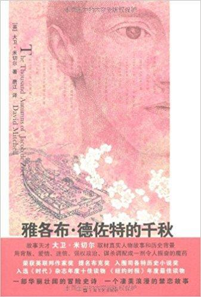
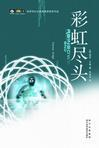
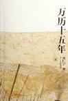
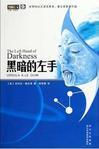

五星推荐（按推荐顺序）
- 雅各布·德佐特的千秋 by [英]大卫·米切尔
分类：长篇小说

评价： 最精彩的部分：不知火神社十三信条的揭开，宇川的死，未能落下的英船炮火，奉行和住持的棋弈与蝴蝶的生死。雅各布、织斗、宇川、住持、奉行、英国船长都给人留下深刻印象（医生马里纳斯简直就是一个符号式的人物，很特别）
十年、二十年、三十年、最后的最后，原来那个铜红色头发、碧色眼睛的雅各布一直最不能忘怀的，仍然是那个在天涯彼端的、黑发黑眸的、独立而安静的、左脸有着烫疤却依然美丽的、他从来没有得到的蓝场川。
- 彩虹尽头 by [美] 弗诺·文奇
分类：长篇小说 | 科幻

评价： 我读过的描述Virtual Reality（虚拟现实）最棒的科幻，印象深刻的有: 心智控制的诡异作用路径，职校的基础课有搜索和分析，连接不同领域的知识变成了比深度探索更重要的事，分析师集群，几乎无所不能的兔子却有一个一开始自己都不清楚的基本却又致命的弱点（鸡蛋放在一个篮子里）。
精彩在于各种设定，剧情似有未完之意。
- 万历十五年 by [美] 黄仁宇
分类：社科

评价： 全书的大视角: 许多局部的问题根本都来源于明朝的文官统治与伦理道德的文明结构过于落后，无法满足经济与外事的形势发展需要。当然这种自上而下的视角不能说毫无可异议之处，上对下有制约，但下也可能推动上，从万历到清末民初这么长时间情况不可能如作者所言无大的改变。不过有一点总是正确的: 上层与下层结构之间如果不能由一种体制进行妥当的双向维系与协调，一个集体就会出现很大的问题。
然后就是，明朝官方的粮食物资输送问题充分提醒我们解耦的重要性，没有集散中心的平级互运，想想真是噩梦...
附：全书摘抄
- 黑暗的左手 by [美]厄休拉•勒古恩
分类：长篇小说 | 科幻

评价： 一本非常慢热的书，近半时候伊斯特拉凡去救艾故事才开始进入高潮部分，最精彩部分是两人的逃亡之旅。本书的设定很出色，从星球环境到人类的生理特点再到科技、文化、政治及哲学，两个国家的建制和民众对比很有趣。一本着重情感和世界观的小说，两位主人公最后发展出的关系很难定义，但是令人回味。
四星尚可（按阅读顺序）
- 台北人 短篇小说
- 黑暗之城：九龍城寨的日與夜 社科 | 建筑
- The Secret Language of Color 自然 | 设计
- 挪威的森林 长篇小说
- Mastering Machine Learning With scikit-learn 计算机 | python
- 哲学 科学 常识（附：全书摘抄） 哲学
- 自控力 : 斯坦福大学最受欢迎心理学课程 （附：全书摘抄）心理学
注：本文整理自我在豆瓣上记录的书及读完时留下的短评，书籍信息链接及图片来源均为豆瓣。